Advanced Building Revue 02: Splits
We have had many articles about mergers, merging, balancing, packing, and so on because it definitely is one of the most important parts in our every game. This one is about the counterpart. Splitting. In this article I would like to describe most of the types of splits and show the possible usages.

Kinds of splitting
The first and most elementary way how to split trains is by orders. Go to spot 1, go to spot 2, simple, easy, effective. This we use in “normal” cases. 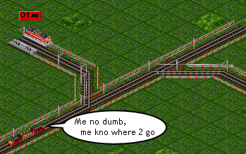
But what happens when we want to split some trains somehow conditionally? Just some?

Split “if there is space”
Based on the power of 2way signals – this one we use mostly in SRNW where any train goes into the entrance, just if there is free space for it (don’t forget to make there at least full-TL waiting space). 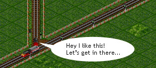
Sometimes trains behave extremely dumb and don’t like the 2ways enough. Then we have to make it forced a bit more. Preferably by closing the other exit. This is the way: NOT-gated waiting bay forces the train to get in if there is no one. This could result in a deadlock at the moment when train is just passing by and suddenly the path closes.

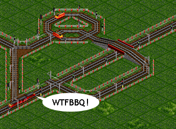
This can be easily solved by making it fail-safe.
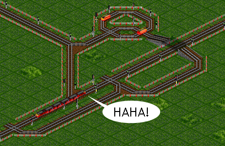
This still has a critical spot – if two trains come very close to each other or just jam here, it is possible that the fail-saving mechanism will be overridden. As an insurance there could be added a combination of entry and exit signals, making it absolutely immune to any failure.
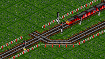
Splitters “am I the one?”
When there are multiple types of trains on the network/split line, the splitter has to recognize them and pick the right ones. Probably the most reliable kind of this so far is the Train Length splitter/recognizer, letting in only trains of a certain, higher, or lower TLs than a set number. Mark and me already wrote something about these so I will just link you to these:
Mark’s train length splitters
V453000’s train length splitters
Splitters “you go this way, I want that way!”
This is the most interesting type of splitters because we have an input of all-the-same trains and we want to split them into X equally loaded parts (or any other ratio).
Gap splitter
The probably first, simplest and least effective is a “gap splitter”. It is relying on split, if one of the lines is already occupied, halving the maximum possible number of traffic each one of these can get.
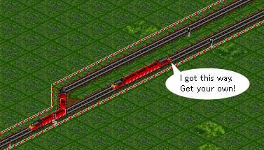
As it is just the maximum, it fails when the maximum is not reached – when two trains come in an inverval, resulting in one of the output to be more stressed than the other one. This is a good split for station entrances, as we only care about the maximum throughput, mostly.
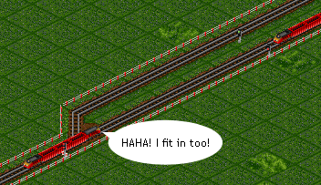
Probability splitter
Probability splitters are based on a period of time in which they are released to a certain output. This means that a timer-style train goes in some cycle through a number of bays. It’s position (related with bays) influences which of the splitter output paths is going to be open. 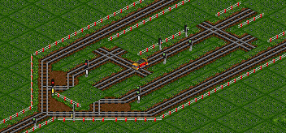
This type of splitter has no problems if trains come in in long intervals but as it is based “just” on probability, in many cases it could be not precise enough.

Similarly as the “is there space?” this also tends to deadlock when the green just suddenly swaps to red when a train is passing by. This situation isn’t that serious though, as the blocked train is going to be released in the next cycle when his path is green again. Still, this could result in jams and slowdowns and can be fixed by fail-safe exit signal again. 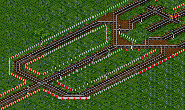

Flip-flop
The best splitter mechanism in terms of precision. The flip-flop can be used to split into two streams, mostly used in ratio 1:1, for which it’s best.

As you can see, there is a memory (1) which gets red if a train passes by and stays red for an unlimited period of time unless it is erased. Therefore this path if closed because the entry combo signal into the path looks at the memory status. But hey! The other path is still open! So the next train goes there and locks the other memory. At the same time, the NOT gate erases the first memory and another train can pass into the first path because it’s memory is now erased.
A very important element for flip-flops is response time of the NOT gates. It has to be able to erase the memory before another train gets there. If we have not fast enough not gates, we have to use longer TL to give it more time or use a different type of splitter. 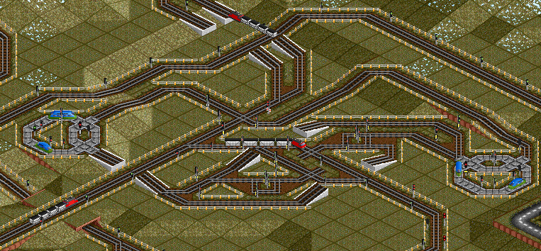 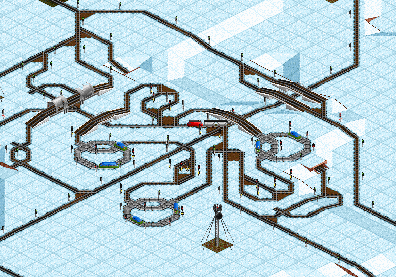
There are also possible modifications of this mechanism, mainly change of the ratio to 1:2 or more. It simply is just making more memories to one path. See this image from PSG 175.
The flip-flop can also be easily used for 1:1:1 split into three lines. Image is also from PSG 175.


Splitter “1,2,3 am I the one?”
This kind “counts” trains and releases every Xth train out to the split output. The rest is kept on the line from which we split. The mechanism is based on a NOT gate which detects any incoming train into the splitter and a cycle bay-based train who changes it’s position in bays with each train passing through the splitter. When the train reaches a certain bay, it splits the train. A key thing is selection of the bay-cycling train which must pass just to the next bay when one train passes the splitter (with too fast trains it could happen that the cycle train skips bays it should stop in, resulting in inaccuracy).

In this picture you can see the “detector NOT gate” (1) which releases the bay-cycle train (2). There are 4 bays in the cycle, meaning that every 4th train splits to A because the bay-detector NOT gate (3) opens that path and at the same time B is closed (4).
This type of splitter is best used with logic trains for NOT gates as we like to have it as accurate as possible. The hugest advantage of this type is it’s flexibility. You can make it split in any ratio from 1:3 to 7:86 or whatever your maniacal mind comes up with. I can think of only only a few problems … the first is – you have to try which train is best for the bay-cycle train. The second thing is that trains must not jam on this mechanism as it could break it completely. Also important is to put the detector close enough to the split, so no the train that is to be split releases itself (doesn’t necessarily have to but it is “safer”) and at the same time the mechanism must have enough time to react and open the split path.
Conclusion
All in all splitters are one big bunch of fun and could be very handy in some situations, especially when SRNW’ing or just in some other special moments when the dumb trains need an extra guidance. As you might’ve seen, I mostly use the flip-flop. That is because if I need to split for example 1->6, I just use three flip-flops in a row (1->2 and 2x 1->3), such as The Hypnotizer in PSG 179. I’m looking forward to more interesting things that could evolve from these basic ones I have talked here about. Thanks for reading and don’t get mad! 🙂
Categories: Development, Gameplay, Public Server
Intexon March 31, 2010 22:59
Very interesting article, thanks for it. Has much use in the current game 😉 (PSG180)